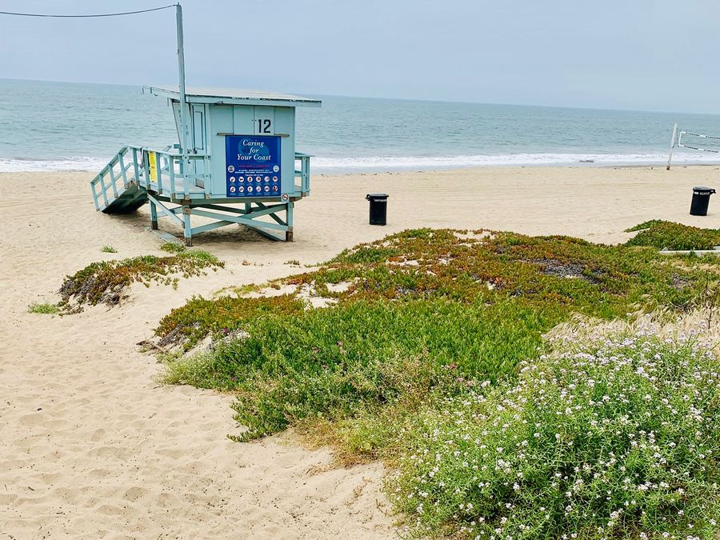
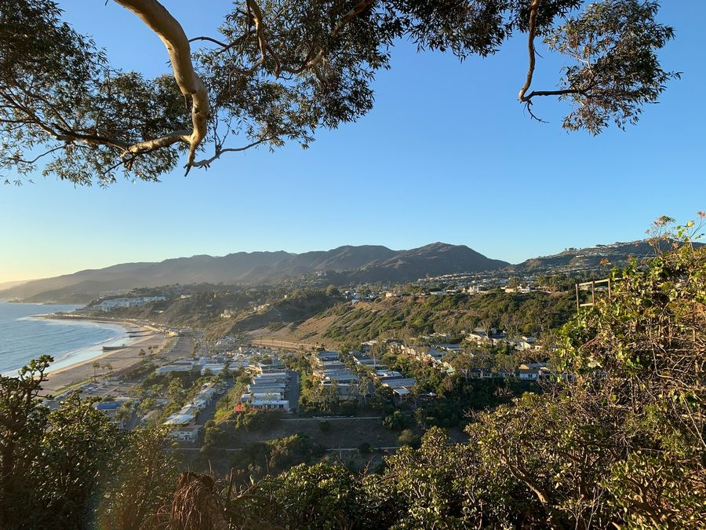

Homeward
Homeward is a single source of truth for families rebuilding after a wildfire. It tracks what the HOA, builder, insurer, and city each said, and flags when they contradict each other.
Photos by Laura Wendelin
Product Showcase (Prototype / Live App / 2-Min Video)
Current Status: Build 1: local prototype

Related Resources
See which Palisades homes are being rebuilt on the Pali Post's Rebuild Map, an independent site run by the Palisadian-Post.
View the Pali Post's Rebuild Map →See which Palisades businesses are open or rebuilding in our Business Directory, compiled from published news reports.
View the Business Directory →Find mental health support, community recovery groups, and city, county and state services for Palisades fire survivors.
Recovery Resources →Living PRD (Product Requirements Document)
The place we're rebuilding


Photos by Laura Wendelin
1. Target User & The Job to Be Done
Who is this for? My parents, a couple in their late 60s rebuilding their Pacific Palisades home after the January 2025 fire. They're in the construction phase, and they manage the rebuild together. My mom keeps the records. My three sisters and I help remotely. They can introduce me to 2-3 neighbor families going through the same process.
Job to be done: Figure out what's actually true and required across every party involved in the rebuild, so they don't act on bad information.
The painful "Before" workflow: Four parties give my parents information that often conflicts: the HOA, the builder, their insurer, and the City of LA. The HOA states a requirement, the builder says they can meet it, then comes back saying they can't or it costs extra, then the HOA says it was wrong. No party checks the plans against the city's process; that falls to my parents. Coverage answers from insurance have to be confirmed and passed to the builder by hand. Every party has given them wrong information at some point, and each time it caused delays. My mom reconciles all of it herself, across email, two portals, and printed folders, for 10-15 hours a week. Families who are less meticulous than she is miss details and go down the wrong road.
The "After" workflow with this product: My parents paste each email thread or letter, in full or just the relevant part, into Homeward. It pulls out every requirement, commitment, and coverage statement, tagged with who said it and when. It keeps a current list of what's true for each topic, such as setbacks, materials, or coverage. When a party contradicts itself or another party, Homeward flags it and shows both statements side by side with sources. The City of LA is treated as a party like the others, so its permit letters and plan-check comments are added the same way, and Homeward flags when the builder or HOA contradicts what the city said. It also lists the open questions to resolve, and who to ask.
2. Scope & Explicit Non-Goals
- In Scope (Core Workflow): Add a message → Homeward extracts claims by party, topic, and date → compares against earlier claims → flags contradictions and reversals → lists open questions.
- Out of Scope #1: No legal, insurance, or construction advice. Homeward flags conflicts between what parties said. It never decides who is right or what the family should do.
- Out of Scope #2: No sending messages. It doesn't email the HOA, builder, insurer, or city on the family's behalf.
- Out of Scope #3: No built-in database of city or county rules in v1. It only compares what the parties themselves said. The design is party-based, not Palisades-specific, so it can work for other wildfires and disasters later.
3. How It Works Under the Hood & Riskiest Assumption (Week 2+)
Riskiest Assumption: The AI can reliably catch real contradictions in messy, real-world emails, including ones my mom caught by hand, without burying families in false alarms.
Second risk: Families will trust Homeward enough to paste their real messages. Privacy concerns may limit what they share.
Simple Architecture: [Pasted email / letter] → [Local web app] → [AI model] → [Structured claims + conflict flags]
A local web app running on my laptop. The user pastes text from an email or letter. An AI model reads it and returns structured claims (party, topic, statement, date). Claims are saved locally. On each new message, the model compares new claims against saved ones and flags conflicts. Real family documents stay in a private/ folder that git ignores and are never committed. The API key lives in .env.
Privacy: Homeward runs locally with no account, and saved data stays on the family’s computer. Text you analyze is sent to an AI provider through OpenRouter. This site uses PostHog analytics to count visits and clicks; text you type into the Conflict Tracker is not recorded. Planned: on-device cleanup that strips signatures and repeated replies, and redaction that replaces names and policy numbers with role labels like [HOA rep], with a summary preview before anything is sent to a zero-retention AI provider.
4. Unit Economics & Analytics Snapshot (Updated Weekly)
Weekly Build Log
Build 1 · Intent.md & Throwaway Prototype (Due Nov 9)
- What shipped: PRD v1 for Homeward, live on this page. Set up Git, GitHub, GitHub Pages, Claude Code, and a PostHog account. Added a private/ folder to .gitignore so real family documents can never be committed. Built a working local prototype: paste an email thread, and it extracts each party's claims, flags contradictions side by side, and lists open questions and who to ask (screenshot above). Tested on six sample threads, it caught 5 of 5 planted conflicts with 0 false alarms, for $0.20 in AI costs. The samples are synthetic and written with known answers, so real, messy emails are still the open test.
- Things learned with AI: The terminal and the agent both take you literally. In Terminus,
cd ..cryptfailed because of one missing slash, andrmdeletes with no undo. Installing Claude Code through npm failed with a permissions error. Instead of forcing it with sudo, I used the native installer and fixed my PATH. Having Claude propose a plan and wait for approval before editing caught mistakes before they happened, like flagging that "builder" and "developer" were used inconsistently, and that private/ wasn't actually ignored yet. I also learned that moving a repo into an org can cost you admin rights, which blocked GitHub Pages until the instructor fixed it. - What broke / changed in PRD: I explored several ideas (new parents, egg freezing, recruiting tools) before landing on my family's wildfire rebuild, the problem I have real access to. I dropped a receipts and insurance-recovery angle because it didn't match where my parents are in the process. I narrowed the core job to one thing: finding the truth when the HOA, builder, insurer, and city contradict each other. I widened input from line-by-line pasting to whole email threads, since pasting line by line was too manual. I added a privacy plan and a second risk (will families trust it with real messages?), and removed details that could identify my family.
- Cost & time this week: $0.26 · 7 hours
Build 2 · Smallest Local Version & PostHog (Due Nov 16)
- What shipped: [Local working slice, PostHog verified on this page and the local app, PRD v2, and local setup in AGENTS.md]
- What broke / changed in PRD: [Fill in]
- Cost & time this week: $[0.00] · [0] hours
Build 3 · Build.exe: The Core Workflow (Due Nov 23)
- What shipped: [End-to-end workflow working with real inputs + PostHog funnel events]
- What broke / changed in PRD: [Fill in]
- Cost & time this week: $[0.00] · [0] hours
Build 4 · Test.py: Choose Track A or Track B (Due Nov 30)
- Chosen track: [A: 10-case domain eval and one outside target-user review; OR B: 3–5 outside users and replay findings]
- Results and improvements: [Before/after evidence; for Track B, fixes to the top three friction points]
- PRD v4 changes: [What the evidence changed]
- Cost & time this week: $[0.00] · [0] hours
Build 5 · Ship.installer: Launch Ops, Rollback Check & 2-Min Video (Due Dec 7)
- Launch Ops & Safety: [Verified no exposed keys, set spend cap, tested 2-minute rollback]
- 2-Minute Video & Final Polish: [Link/embed above]
- Cost & time this week: $[0.00] · [0] hours